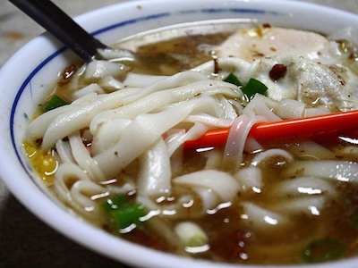

米干
米干是一種純米做成的麵條，是雲南的特色主食，然而為何成為桃園的在地早餐呢？這其中有個曲折的故事可講。
當國民黨退守台灣時，雲南有一支部隊堅決不降，他們越過邊境流亡緬甸，躲藏在叢林中打游擊戰，人稱「異域孤軍」。後來因為聯合國的施壓，這隻孤軍從1953～1954年撤回臺灣6千多人，政府將他們安置在桃園龍岡。而因為孤軍多為雲南人，他們的眷屬則更包涵雲南各少數民族和緬、泰等民族，因而引進了雲南美食米干，成為桃園的特產。
米干因是由米漿蒸至凝結、切割而成的，故形似粄條，但比粄條的口感更厚實Q彈，麵條則潔白如雪。米干的吃法，通常會在熱熱的湯中加入蛋、肉和豬肝等配料，和雲南的吃法相似，是一道擁有異國風味的在地早餐！
